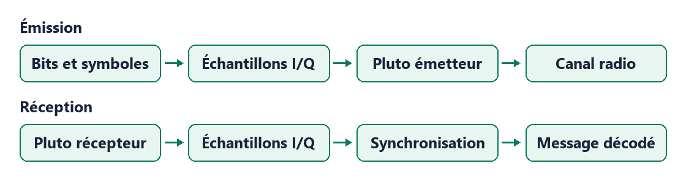
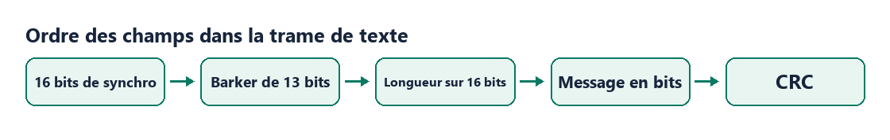

Comprendre le projet de transmission
1. Passer des bits aux échantillons avec MATLAB
Un bit est une valeur d’information. Un symbole est l’état du signal que l’émetteur choisit pour transmettre un ou plusieurs bits. Un échantillon mesure ou représente numériquement le signal à un instant. Pour une rapidité R et N échantillons par symbole, règle la fréquence d’échantillonnage à Fe = R × N. Utilise t = (0:Ntotal-1)/Fe pour obtenir exactement le nombre de points voulu.
En NRZ, répète le niveau pendant toute la case. Manchester utilise deux demi-cases et une transition centrale. En 2B1Q, forme des dibits puis applique les quatre niveaux du cours. En MLT-3, conserve l’état d’une case à la suivante et avance dans le cycle seulement quand le bit vaut 1. Pour vérifier un script, commence par un train court dont tu sais déjà dessiner le résultat.
Le chronogramme montre les niveaux et l’horloge. Le spectre montre les fréquences présentes. Avant de prendre une FFT, construis son axe avec la vraie Fe. Par exemple, sur N points le pas fréquentiel de la grille vaut Fe/N. Relie une différence de spectre à la durée et à la fréquence des transitions, pas seulement à la forme du tracé.
2. Distinguer AM, ASK, PSK et FSK
En AM, une porteuse sinusoïdale est multipliée par une enveloppe liée au signal modulant. En ASK, l’amplitude prend des valeurs qui représentent des symboles. En PSK c’est la phase qui change. En FSK, les symboles utilisent des fréquences différentes. La première FSK du TP est un exercice logiciel à 2 kHz de déviation, tandis que la transmission de texte sur le Pluto prend ±100 kHz.
Pour un extrait sonore, centre les échantillons en retirant leur moyenne puis règle la crête à crête. Si le signal a des crêtes dissymétriques, une crête à crête de 2 après centrage ne garantit pas que chaque crête soit limitée à ±1. Vérifie donc l’enveloppe de l’AM pour savoir si le signal passe en surmodulation.
3. Comprendre le rôle du Pluto et les deux voies I/Q

Écris C(t)=I(t)+jQ(t). Le modulateur du sujet combine I·cos(2πfpt) et −Q·sin(2πfpt). Avec C=1+j0, il reste une porteuse non modulée. Avec C=exp(j2πf₀t), I et Q valent respectivement cos(2πf₀t) et sin(2πf₀t). Le signal radio devient un cosinus à fp+f₀.
Si le second Pluto est accordé sur fp, le pic complexe devrait réapparaître à f₀. L’écart mesuré vient notamment des références de fréquence des deux appareils. Pour comparer une erreur relative d’oscillateur, divise l’écart absolu en hertz par la fréquence porteuse, puis multiplie par 10⁶. Avec une FFT complexe et un axe centré, le signe du décalage reste visible.
4. Construire une trame et retrouver le bon début

Une trame organise les données transmises. Dans le TP, seize bits alternés aident à synchroniser, puis treize bits de Barker donnent un repère identifiable par corrélation. La trame texte contient ensuite une longueur sur seize bits, le message et un CRC. La longueur se compte en bits. Avec deux octets de texte, elle vaut 16 même si elle occupe elle-même un champ de 16 bits.
Fixe l’encodage du texte et l’ordre des bits des octets aux deux extrémités. Le CRC permet de détecter une altération si l’émetteur et le récepteur utilisent les mêmes paramètres et contrôlent les mêmes champs. Vérifie que le tampon est assez long pour lire le champ annoncé avant d’en extraire le message.
5. Observer la QPSK, le filtre et les défauts du canal
La M-PSK choisit un angle parmi M. Avec M=4, deux bits déterminent un point. Après mise en forme en cosinus surélevé, compare le spectre et les échantillons aux instants de décision. Inclure tous les échantillons pendant les transitions montre les trajectoires. Une constellation de symboles se lit aux instants correctement synchronisés, après avoir pris en compte le retard du filtre.
Un déphasage fixe fait tourner les points du même angle. Un écart de fréquence ajoute un angle croissant dans le temps. Du bruit disperse les points. Change un seul effet à la fois et conserve les réglages pour pouvoir expliquer la différence. Avec davantage d’états sur le même cercle, les points sont plus proches sur le plan angulaire.
6. Fabriquer et démoduler la FM en complexe
En FM, l’écart instantané de fréquence suit le son. Intègre ce son pour obtenir la phase θ(t), puis crée C(t)=exp(jθ(t)). Pour limiter la crête de l’écart à Δf, prends θ(t)=2πΔf∫m(t)dt / max(|m|), à condition que max(|m|) soit non nul. Dans MATLAB, l’intégrale numérique se construit avec cumtrapz(t,m) en secondes.
À la réception, applique angle(r(k)*conj(r(k-1))). La différence d’angles approximée, multipliée par Fe/(2π), donne l’écart signé de fréquence. Évite que la différence dépassant ±π soit ambiguë et utilise le taux réel de capture. Pour écouter, adapte la cadence à celle du son ou rééchantillonne.
Sigles et acronymes
- AM · Amplitude Modulation
- Modulation d’amplitude.
Exemple. Une porteuse radio devient plus ou moins forte au rythme du signal à transmettre. - ASK · Amplitude Shift Keying
- Modulation numérique avec plusieurs amplitudes.
Exemple. Une porteuse forte peut coder 1, tandis qu’une faible amplitude code 0. - CRC · Cyclic Redundancy Check
- Contrôle calculé pour détecter des erreurs de transmission.
Exemple. Le récepteur recalcule le CRC puis compare avec la valeur reçue. - FFT · Fast Fourier Transform
- Calcul efficace de la représentation fréquentielle d’un signal.
Exemple. La FFT d’un sinus à 1 kHz permet de repérer la composante à 1 kHz. - FM · Frequency Modulation
- Modulation de fréquence.
Exemple. La fréquence instantanée de la porteuse varie avec le signal audio. - FSK · Frequency Shift Keying
- Modulation numérique qui change la fréquence.
Exemple. Un émetteur choisit une fréquence pour 0 et une autre pour 1. - MLT-3 · Multi-Level Transmit, trois niveaux
- Codage de ligne qui alterne entre trois niveaux.
Exemple. Sur un 1, le signal passe au prochain niveau du cycle, tandis qu’un 0 le maintient. - NRZ · Non Return to Zero
- Codage qui conserve le niveau pendant le bit.
Exemple. Dans une variante NRZ, une suite de 1 garde le même niveau. - PSK · Phase Shift Keying
- Modulation numérique qui choisit entre plusieurs phases.
Exemple. En BPSK, les deux bits possibles sont représentés par deux phases opposées. - QPSK · Quadrature Phase Shift Keying
- Modulation qui utilise quatre phases.
Exemple. Quatre phases possibles permettent de coder deux bits par symbole. - RBW · Resolution Bandwidth
- Largeur de bande de résolution en analyse spectrale.
Exemple. Diminuer la RBW aide à distinguer deux raies rapprochées. - SDR · Software-Defined Radio
- Radio dont une partie du traitement se fait par logiciel.
Exemple. Un récepteur SDR permet d’afficher le spectre d’un signal reçu. - UTF-8 · Unicode Transformation Format, 8-bit
- Encodage Unicode à longueur variable.
Exemple. En UTF-8, le fichier garde correctement les accents.
Du cours aux TD et TP
| Notion | Application du sujet | À savoir refaire |
|---|---|---|
| Codage et FFT | Reprise MATLAB | Tracer NRZ, Manchester, 2B1Q et MLT-3 et lire le véritable axe des fréquences. |
| AM et I/Q | Modulation du son et porteuse Pluto | Calculer une enveloppe et expliquer pourquoi une rotation I/Q décale la fréquence. |
| FSK et trame | Transmission du texte | Relier débit, horloge, longueur, Barker et vérification CRC. |
| M-PSK et FM | Simulation de constellation, puis partie FM | Isoler les effets du canal et dériver la phase pour récupérer le modulant. |
Questions TD & TP
Reprise MATLAB · Modifier le script NRZ
Énoncé. Analyser en temps et en fréquence le script NRZ fourni, puis produire un signal Manchester, 2B1Q et MLT-3.
- Repère où sont choisis les bits, le débit et la fréquence d’échantillonnage. Calcule le nombre de points par bit et vérifie qu’il divise la longueur de la sortie.
- Sur
101, les niveaux NRZ bipolaires valent +, −, +. Pour Manchester dans la convention du poly, construis les demi-niveaux[+ −] [− +] [+ −]. Choisis un nombre pair d’échantillons par bit. - Avec
10 | 01, le tableau 2B1Q du cours donne +3A, −A. En MLT-3, pars de 0 et utilise le cycle+E, 0, −E, 0aux 1 successifs. Les 0 gardent le dernier niveau. - Trace le signal avec les mêmes unités temporelles, puis la FFT avec la fréquence réellement choisie pour les échantillons. Compare ce qui change à débit d’information constant.
AM · Centrer et normaliser l’audio
Énoncé. Charger le son demandé, garder au plus 20 000 échantillons, centrer le modulant, le mettre à 2 V crête à crête et générer l’AM pour un indice de 1.
- Avec
audioread, conserve la fréquence du fichier et choisis un canal. Limite la colonne à ses 20 000 premières lignes si elle en contient assez. - Calcule
x = x - mean(x), puis multiplie par2/(max(x)-min(x))si l’écart est non nul. Vérifie moyenne et crête à crête. - Sur un axe à la cadence de la simulation, multiplie
1+xpar la porteuse. Si tu dois représenter une porteuse hors de la bande permise par la cadence audio, rééchantillonne ou simule d’abord le signal en bande de base. Trace l’enveloppe et les bandes latérales. Vérifie si1+xchange de signe.
Pluto SDR · Émettre une porteuse puis mesurer le décalage
Énoncé. Émettre sur le canal attribué au TP. Mesurer la porteuse et son erreur en ppm, puis émettre un ton complexe de 50 kHz et comparer émission et réception.
- Calcule fp=2400+2n MHz à partir du numéro donné au banc. Envoie des échantillons complexes constants. Centre l’analyseur à cette fréquence, réduis le span et règle la RBW pour relever le maximum.
- Si, par exemple, une porteuse attendue de 2402 MHz est mesurée 1200 Hz plus haut, l’erreur vaut [1200/(2,402×10⁹)] × 10⁶ ≈ 0,50 ppm. Utilise ta mesure réelle dans le compte rendu.
- Émets C(t)=exp(j2π·50000t). Compare la raie en réception complexe à 50 kHz. Si elle est à 53 kHz, l’écart résiduel vaut +3 kHz. Pour compenser ce cas, multiplie la réception par exp(−j2π·3000t) puis contrôle que la raie est revenue vers 50 kHz.
FSK · Émettre le message court et retrouver la trame
Énoncé. Transmettre les neuf bits 101011010 à 20 kbit/s, avec ±100 kHz et 32 échantillons par bit. Ajouter la synchronisation et le Barker, puis retrouver le message.
- Calcule Tb=50 µs, Fe=640 kHz et 9×32=288 échantillons pour le message seul. Si tu ajoutes les 29 bits d’en-tête, recalcule la longueur à 38×32=1216 points.
- Les deux tons sont séparés de 200 kHz. Dans
fskmodetfskdemod, c’est cette séparation que tu fournis. Vérifie le sens des fréquences avec deux séquences connues de 0 et de 1. Utilise la même cadence et le même nombre de points par symbole des deux côtés. Documentation MATLAB de fskmod - Une capture de 2×N points donne la place de contenir une trame répétée, à condition que la radio reçoive effectivement ces points sans perte. Ce réglage ne donne pas l’indice du début de trame. Repère le préambule, contrôle la position renvoyée par le détecteur sur une simulation connue, puis extrais les bits utiles dans les bornes du tampon.
Texte · Distinguer longueur du message et contrôle CRC
Énoncé. Transmettre un texte de longueur variable, le reconstruire à la réception, puis provoquer une erreur pour vérifier le CRC.
- Choisis un encodage, par exemple UTF-8. Sérialise chaque octet selon un ordre fixé. Pour
OK, deux octets donnent 16 bits utiles. Écris la valeur 16 dans le champ longueur de 16 bits. - Après le Barker, lis d’abord les 16 bits de longueur puis ce nombre de bits utiles. Vérifie que la longueur correspond à des octets entiers et laisse la place au CRC. Contrôle le CRC avec exactement le même polynôme et les mêmes paramètres.
- Accepte la trame intacte. Inverse un bit du message avant de contrôler la copie, puis vérifie que l’erreur est détectée. Ne présente pas un texte reconstitué comme valide si le contrôle a échoué.
M-PSK · Dimensionner, simuler et relever le spectre
Énoncé. Simuler puis émettre 40 320 bits à 20 kbit/s, M=4 au départ, 32 échantillons par symbole et un cosinus surélevé de coefficient 0,4. Comparer l’effet du filtre, du bruit et des décalages.
- En QPSK, tu obtiens 20 160 symboles à 10 kbaud et 320 kHz d’échantillonnage. Le signal symbolique sans transitoires représente 645 120 échantillons si tu produis 32 points par symbole. Un filtre peut introduire un retard à prendre en compte dans les observations.
- Affiche I/Q, FFT et constellation aux bons instants. Compare au filtre désactivé et indique dans quelles conditions tu observes la bande. L’occupation idéale autour de la porteuse vaut environ (1+0,4)×10 kbaud = 14 kHz dans le modèle du cosinus surélevé.
- Recommence avec 8, puis 16 états en refaisant R=D/log₂(M) et Fe=32R. Fais un essai par perturbation. Émets ensuite sur le banc avec les réglages attribués et relève le spectre effectivement mesuré.
FM · Revenir du signal reçu à la piste audio
Énoncé. Générer la phase FM à partir du son, recevoir 500 000 échantillons à 1 MHz et reconstituer le modulant avec les quatre étapes du TP.
- Intègre le son à sa vraie cadence, puis multiplie par 2π·Δf/mmax. Prends l’exponentielle complexe. Lorsque l’émetteur lit les points, utilise une cadence cohérente avec celle de leur génération. Si le TP envoie les mêmes N points à un taux différent, la nouvelle durée est N/Fe.
- La capture couvre 500 000/1 000 000=0,5 s. Enlève au besoin un décalage résiduel constant. Pour chaque paire de points voisins, prends l’argument du produit avec le conjugué, multiplie par Fe et divise par 2πΔf pour retrouver le modulant normalisé.
- Une remise à l’échelle absolue demande de connaître la normalisation de départ. Si le but est l’écoute, ramène le rythme à une cadence audio appropriée et ajuste le niveau d’écoute séparément.